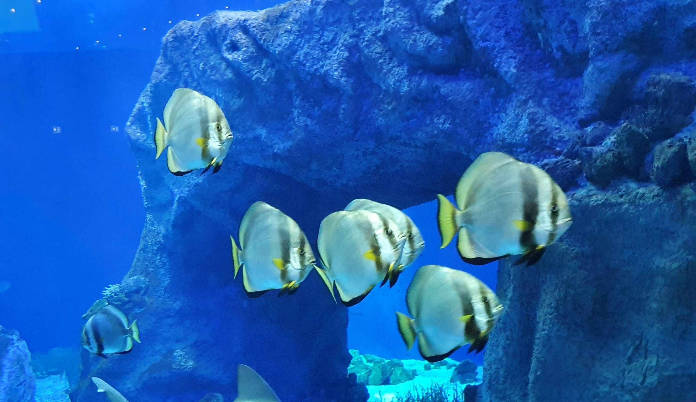
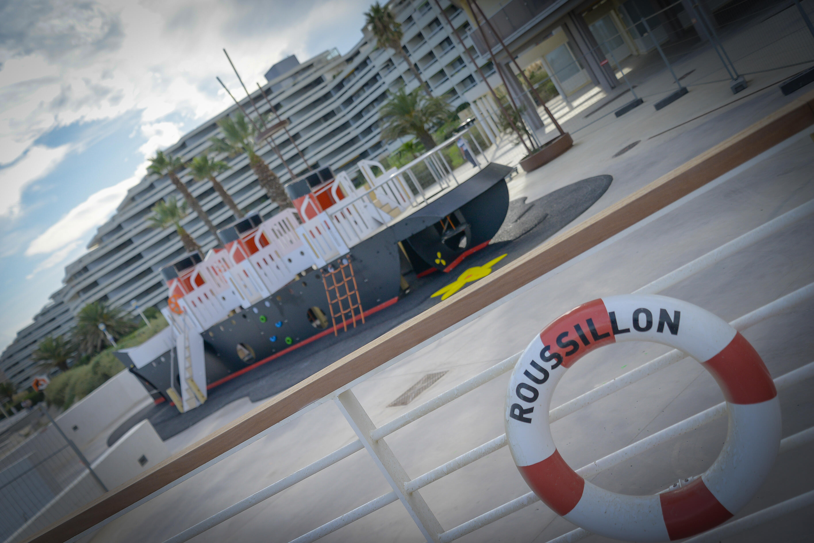
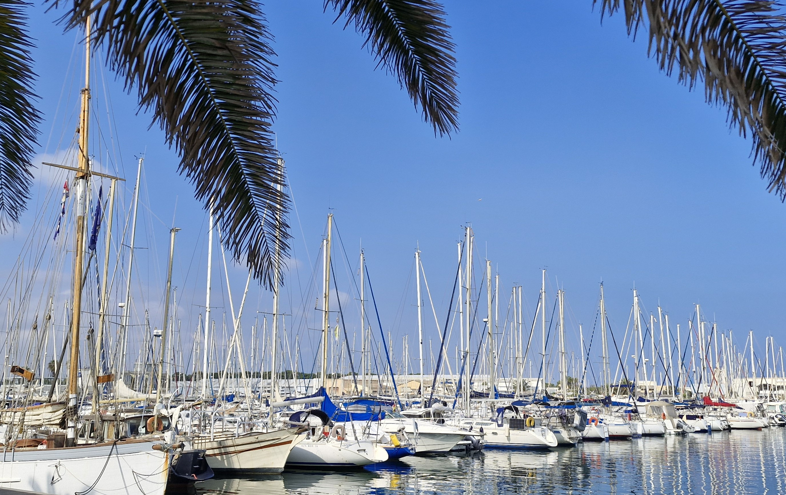
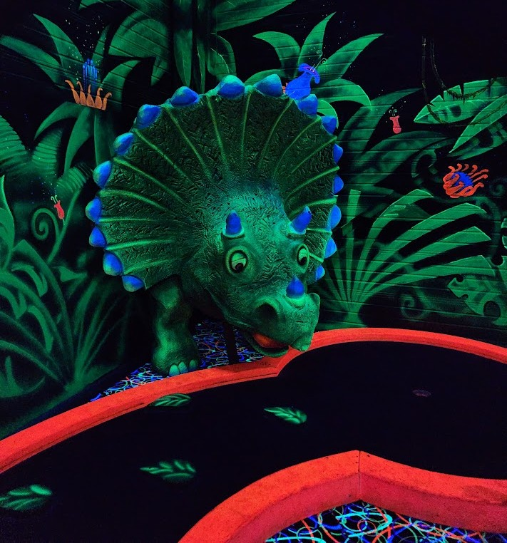
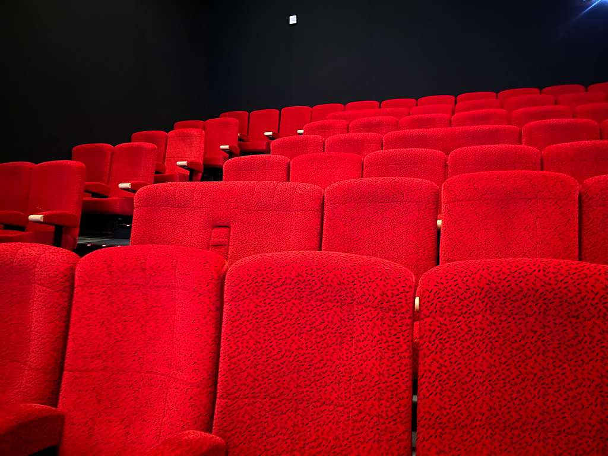
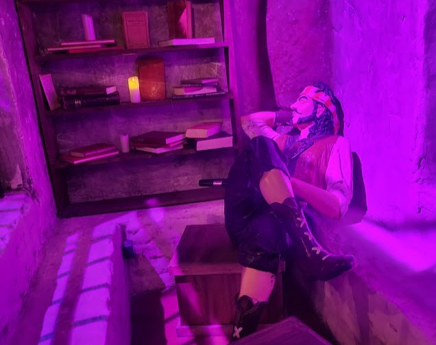
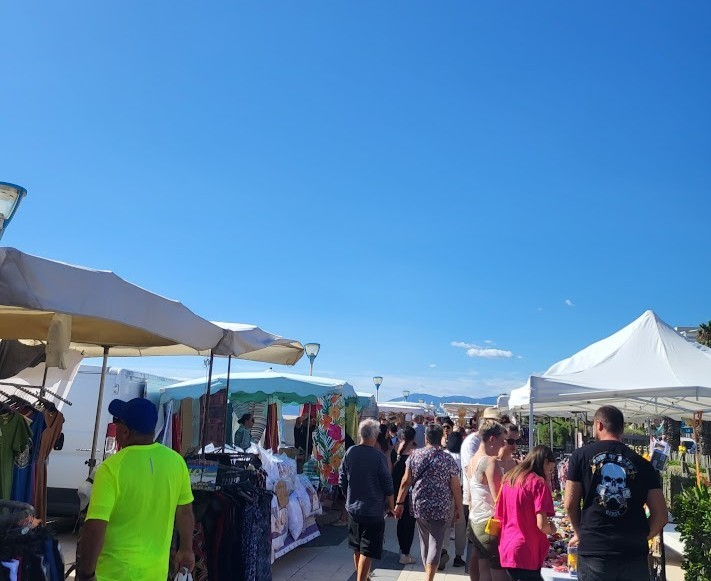
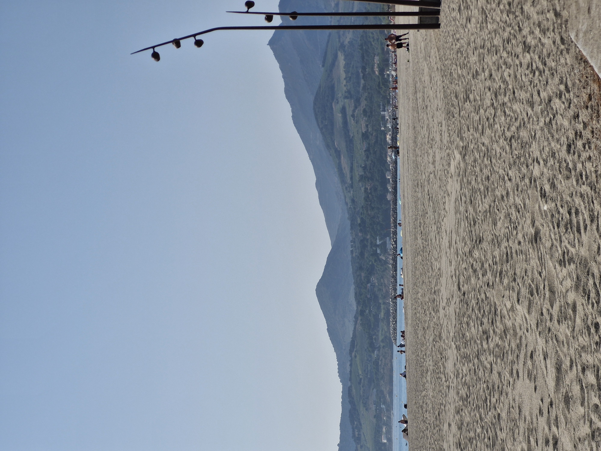
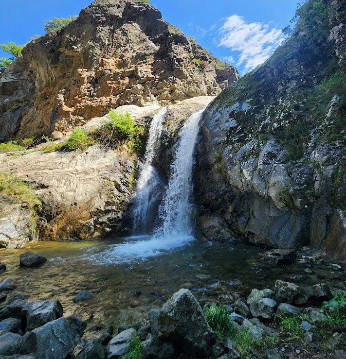
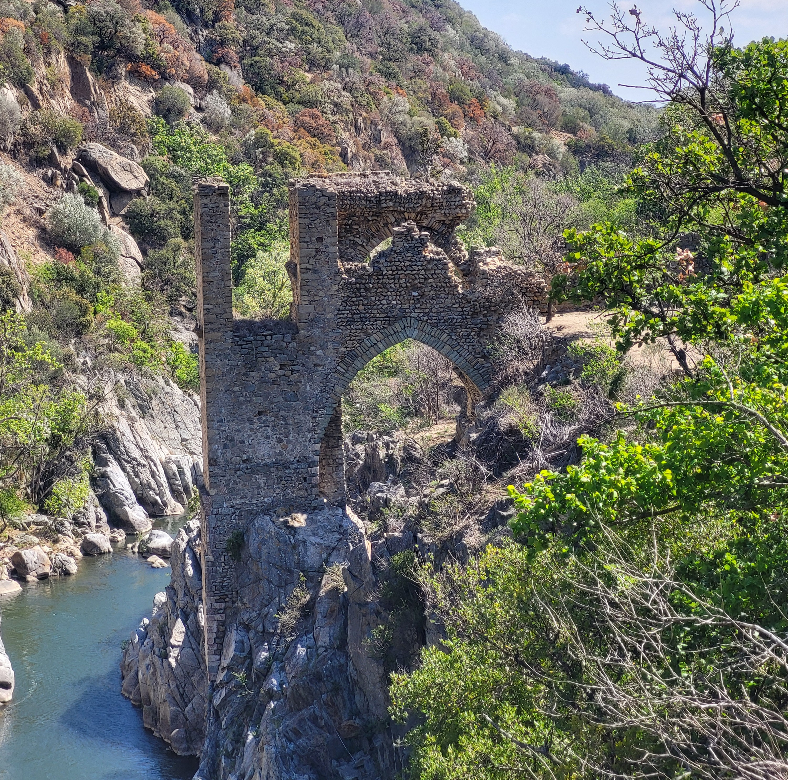

Nearby
Discover shops, activities and great places around the apartment to fully enjoy your stay.
📄 Summer Program
Find all summer events, concerts and activities:
📥 Download Summer Program 2025🛒 Essential Shops
- Vival Canet Sud – 7 min walk
- Utile Canet Plage – 7 min walk
- Tom Poupiz Bakery – 7 min walk
- Canet Sud Pharmacy – 10 min walk
- Intermarché SUPER Canet-en-Roussillon – 6 min by car
🎡 Must-Do Activities in Canet

Oniria Aquarium
An immersive and spectacular journey through the oceans. Perfect for families and sea lovers.
Visit website
Seaside Playground
A playground shaped like a boat just 5 minutes’ walk from the apartment, facing the sea. Suitable from age 2, in a secure area under parental supervision.
Visit website
Port of Canet-en-Roussillon
A lively marina, ideal for a walk, admiring the boats, enjoying waterfront restaurants or going on a sea excursion. A warm atmosphere day and night.
Visit website
Mini Golf
A fun and colorful seaside course, perfect for families or friends. Suitable for all ages in a relaxed summer atmosphere.
Visit website
Bowling – Glow Mini Golf – Laser Game
A full leisure complex including bowling, glow mini golf and laser game. Perfect for family outings or evenings with friends, especially on cloudy days.
Visit website
Clap Ciné Canet
The local cinema featuring the latest releases and family movies. A great option after a beach day or in bad weather.
Visit website🍽️ Recommended Restaurants

Restaurant La Paillote
A beachfront restaurant known for its relaxed atmosphere, Mediterranean dishes and sunset cocktails. Perfect for lunch with your feet in the sand or dinner facing the sea.
Visit website
La Marée de Joe
A well-known restaurant in Canet Sud, famous for fresh fish, seafood and grilled dishes. Friendly atmosphere and generous portions.
Visit website
Gang de Pirates Restaurant
A pirate-themed family restaurant loved by children and adults alike. Immersive décor and generous dishes just steps from the sea.
Visit website🧺 Markets

Canet-en-Roussillon Market
A lively traditional market with local products, fresh fish and Catalan specialties in a friendly atmosphere.
Visit website
Argelès-sur-Mer Market
One of the largest and most vibrant markets on the coast. Local producers, colorful stalls and a true summer atmosphere.
Visit website
Barcarès Market
A friendly coastal market offering local products, fresh fish, crafts and Mediterranean specialties.
Visit website🥾 Hiking Within One Hour of Canet

Vernet-les-Bains Waterfalls Hike
A beautiful nature walk featuring shaded paths, small bridges and scenic viewpoints overlooking several waterfalls. The trail is pleasant, refreshing and accessible — perfect for a relaxing outing less than one hour from Canet.
Visit website
Notre-Dame de Vie Chapel & Caves
A lovely hike combining heritage and nature, with a scenic path leading to a hilltop chapel and several small caves. The route offers beautiful valley views and a peaceful atmosphere, ideal for a discovery walk.
Visit website
Gorges de la Guillera, Castle & Village
A varied and charming hike featuring scenic gorges, the discovery of an old castle and a walk through a typical village. The route offers beautiful viewpoints and an authentic atmosphere — perfect for a nature and heritage escape.
Visit website